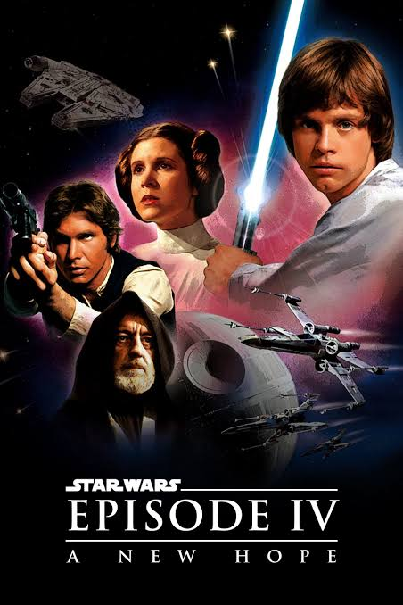

Star Wars: Episodio IV – Una Nueva Esperanza (1977)
Bienvenidos al sitio sobre la primera película estrenada de la saga Star Wars. Aquí encontrarás sinopsis, reparto, detalles de producción y una galería de imágenes.

Introducción
En una galaxia gobernada por el Imperio, una joven líder rebelde es capturada y un granjero llamado Luke Skywalker se une a aliados para rescatarla y combatir la opresión. La historia sigue una misión para destruir una superarma imperial y devolver la esperanza.
Información sobre la película
- Género: Ciencia ficción / Aventura
- País: Estados Unidos
- Duración: ~121 min
Contenidos
- Sobre la película: sinopsis, contexto y locaciones.
- Reparto: actores y personajes principales.
- Producción: estudio, dirección y música.
- Сuriosidades: posters y escenas.
- Contacto: enlaces y agradecimientos.